2026
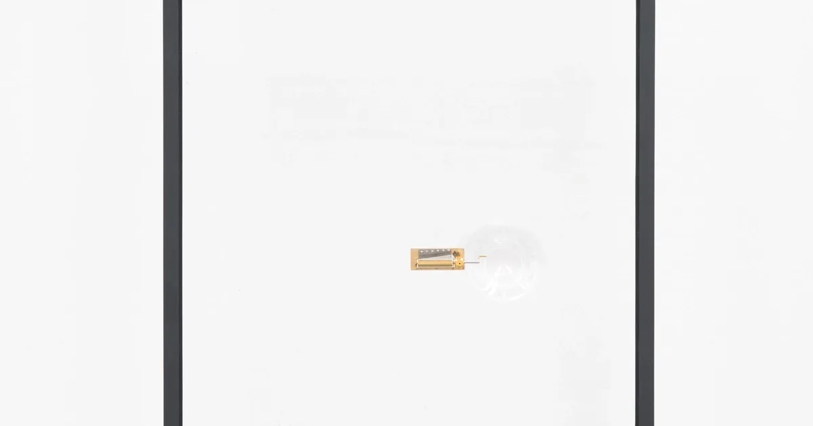
No Window No Cry（Lina Bo Bardi, Casa de Vidro）
作品沿着建筑窗框、玻璃与音乐盒的关系继续迁移；同一首歌保持连续，地点与建筑历史不断改变观看条件。
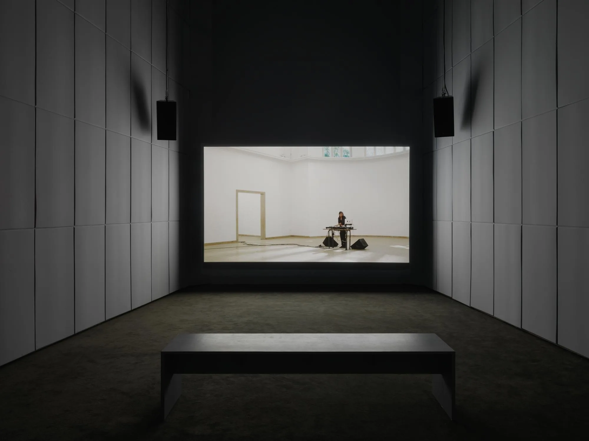
01 / PROFILE
从影像、声音与建筑出发，理解 Anri Sala 如何把观看变成一种身体性的听觉经验。
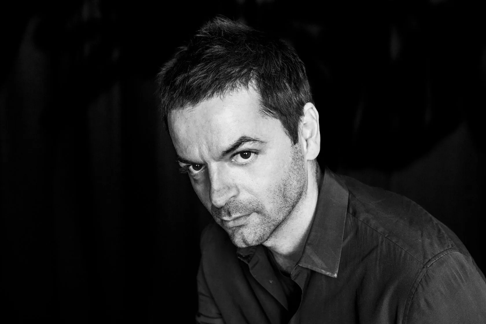
Anri Sala（1974 年生于地拉那）是一位以电影、影像、声音装置、音乐和建筑关系展开创作的艺术家。作品经常让一个微小的声响、一个延迟的字幕或一次屏幕错位，扩展成关于记忆、城市、制度与时间的空间经验。
他的作品不把声音当作图像的说明，而是把声音当作一种能够改变观看路径的结构：音乐会从屏幕中脱离，建筑会成为回声体，观众的行走也会成为作品的一部分。早期的采访与城市影像建立了语言、翻译和政治记忆的张力；后期的装置则把这种张力转译为可移动、可聆听、不可完全稳定的场域。
02 / KEYWORDS
中文与外语并置，方便在原文、展览文本和作品分析之间往返。
把每件作品看作一个“关系系统”，而不是孤立的物件：材料决定声音的传播，建筑决定观看的角度，观众的位置决定作品何时变得可听。分析重点因此落在三个层面：一是作品如何组织感知，二是作品如何带入历史，三是作品如何在不同机构与城市中重新适配。
这也是为什么作品和展览不能被完全分开：同一件作品在新的地点会改变节奏、路径和身体尺度；展览并不是作品之外的包装，而是作品继续生成的条件。
03 / TIMELINE
新到旧排列；每个节点都连到作品、展览或机构原文。图片保持比例，不拉伸。

作品沿着建筑窗框、玻璃与音乐盒的关系继续迁移；同一首歌保持连续，地点与建筑历史不断改变观看条件。
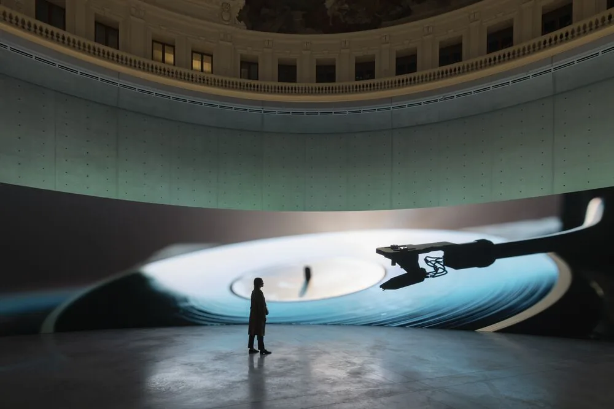
圆形 Rotunda、弧形屏幕、旋转唱盘与 Messiaen 的音乐把作品扩展为一张跨楼层的声学地图。
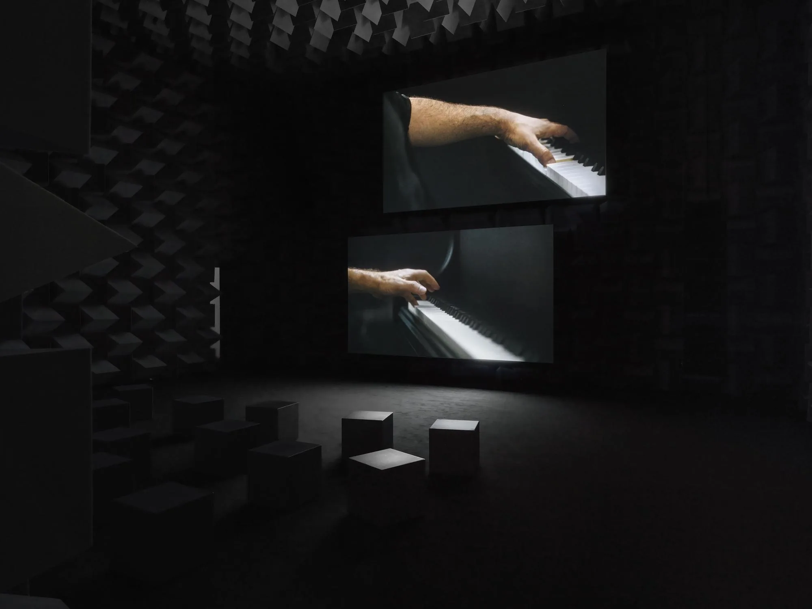
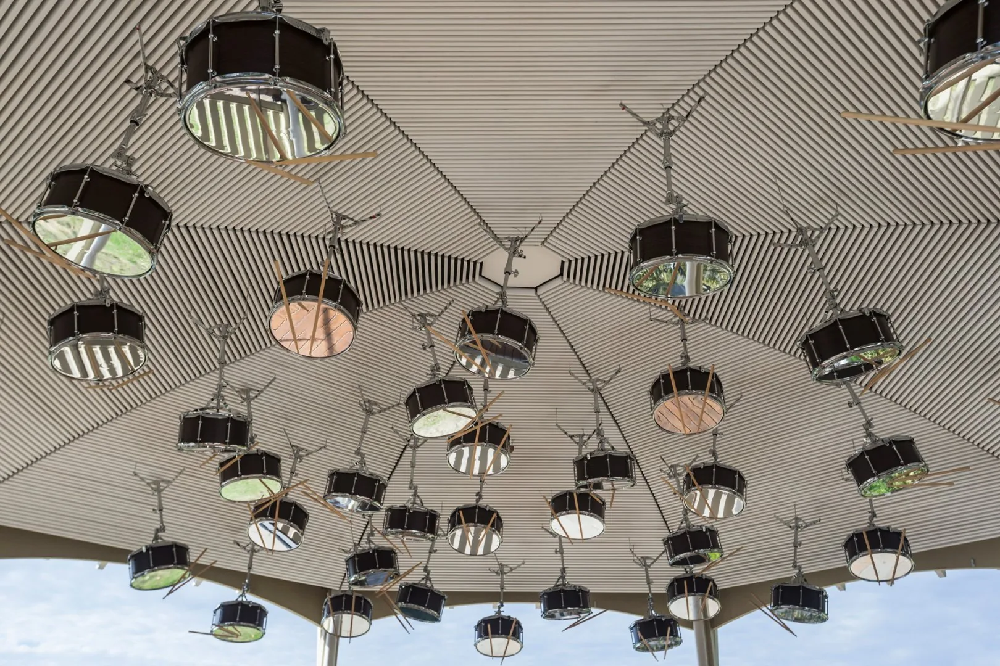
风和鼓把自然力量带进作品；经典音乐在 Sydney 的地点史与迁移中被重新编排。
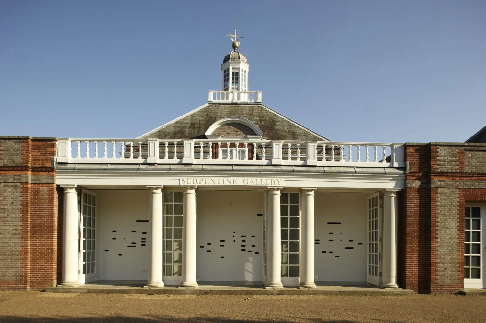
两种左手演奏彼此靠近又错开，观众的身体被置于两条时间线之间。
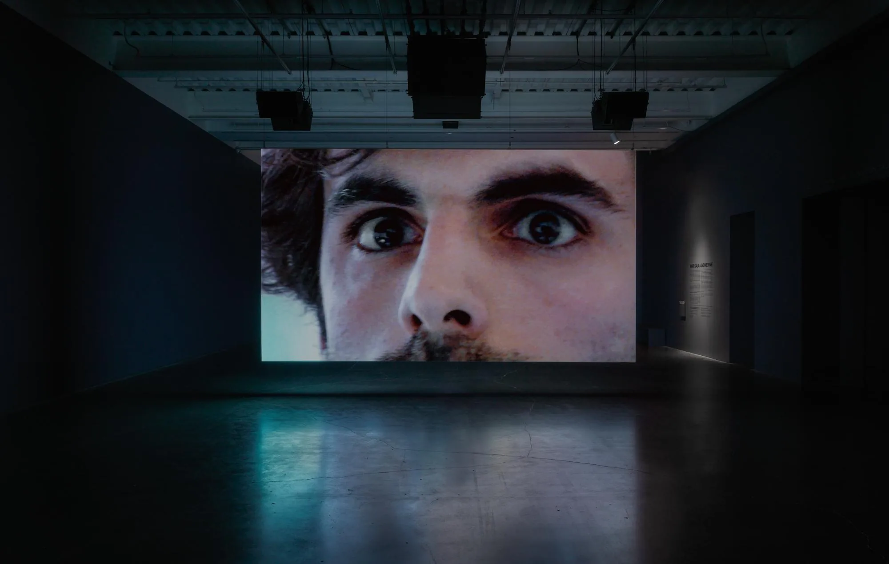
展览把固定影像与现场即兴并置，重复因此不是复制，而是偏差持续累积。
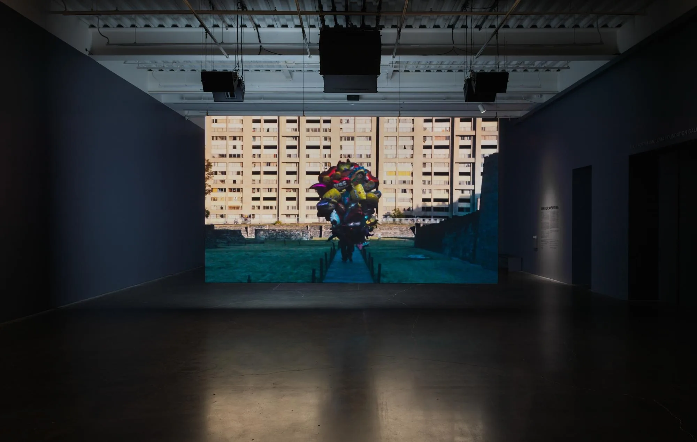
废弃的监视站被转化为回声结构，建筑从背景转为主动参与叙事的声音装置。
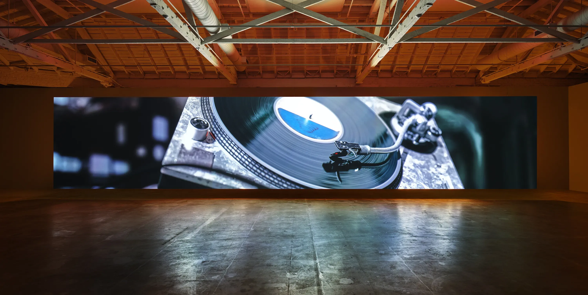
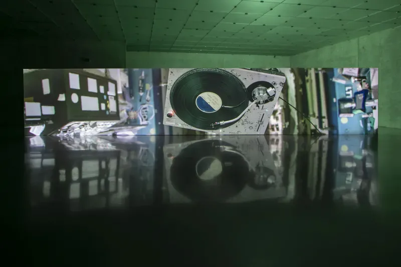
04 / WORKS
作品按年份从新到旧排列。每件包含中英文标题、年份、媒介、作品介绍、分析、提取词与对应出处。
WORK / 2026
这是 Sala 的《No Window No Cry》系列在 2026 年的最新版本之一，作品将现代主义建筑的窗框、玻璃与音乐盒结合起来。Esther Schipper 的作品页列出 Lina Bo Bardi 的 Casa de Vidro 版本，并说明系列中的窗户会随着建筑而变化，而歌曲保持不变。窗框因此既是观看现实的界面，也是把建筑历史、身体尺度和声音记忆重新带入展厅的装置。
作品的重要性在于，它不把建筑当作单纯的背景，而是让每一扇窗都成为一次具体的空间翻译：同一首歌在不同建筑中保持连续，窗户的结构、视线和历史却不断改变。2026 版本把现代主义建筑的透明性与音乐盒的机械性并置，使观看不再是远距离的凝视，而成为一个需要伸手、靠近并重新定位的动作。作品由此延续 Sala 对声音、记忆和建筑关系的研究，同时把系列推向新的地点与新的现代主义谱系。
提取词｜窗／建筑／音乐盒／现代主义时间
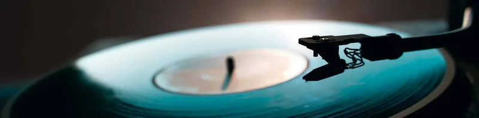
WORK / 2021
作品围绕 Messiaen 的《时间终结四重奏》展开，把音乐、旋转、光线和展厅路径组合为一个不断调整的感知系统。唱盘在近似失重的视觉条件中运行，唱针偶尔跳针、悬停或改变轨道，音乐因此同时指向物理旋转和历史创伤。作品既可作为单件 13 分钟的计算机生成影像与多声道装置观看，也会随着建筑尺度和观众移动重新组织。
时间在作品中既是音乐标题，也是观众身体被迫面对的物理条件。旋转并不提供全景，而让空间持续拒绝稳定的正面；Messiaen 的音乐从被囚禁的历史中进入展厅，形成一种不稳定却持续抵抗的当下。作品的重要性在于，它把监禁中创作的《时间终结四重奏》与太空舱、失重唱盘和圆形建筑并置，让线性历史被改写为断裂、循环和漂浮的时间经验；Pinault 的展览进一步把这件作品延展到通道、橱窗、放映和现场萨克斯演出，使“时间”成为机构、建筑、声音和观众共同承担的展览结构。
提取词｜终时刻／旋转／光／观看路径
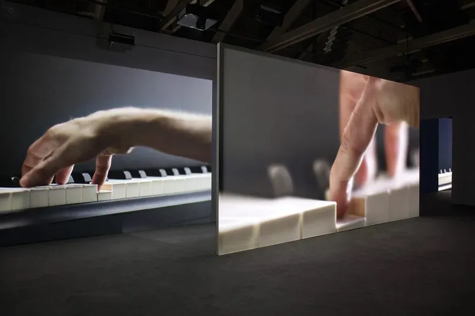
WORK / 2019
作品以多块相互错开的屏幕呈现手指在钢琴键盘上的运动。图像中的手势、键面和屏幕之间彼此延迟，观众必须在空间中移动，才能把一组局部画面暂时拼合为一次演奏。艺术家档案将其列为 2019 年的重要作品，并记录其在 Castello di Rivoli、Fundación Botín 及台北 Winsing Art Place 等地的展览延展。
作品让“前行”成为观看动作，而不只是标题中的方向。手指似乎在弹奏同一架钢琴，但屏幕的错位阻止观众获得完整的正面；每一步移动都会重新安排声音与图像的对应关系。作品的重要性在于，它把 Ravel 系列中关于双重时间的研究转译为更开放的空间语法：不再只是两条影像并置，而是让观众的身体参与拼接、校准和误读。于是，演奏不是一个已经完成的动作，而是在观看者行走时不断被重新生成的关系。
提取词｜屏幕错位／行走／键盘／拼接
WORK / 2018
镜头跟随蜗牛沿弓的长度移动，同时由 Gérard Caussé 演奏 Stravinsky 的独奏中提琴作品。身体尺度、速度和音乐持续时间被放在同一个实验里；Esther Schipper 的作品资料还记录了以蜗牛和弓为图案的木制纺织印版，说明影像中的偶然行动被进一步转译为可触摸的雕塑和图像。
作品的戏剧性来自极慢的速度：蜗牛不是比喻，而是一种具体的时间装置。弓被重新看成一条地形，音乐的优雅与爬行的迟缓互相校准；观众必须把注意力交给几乎不动的身体，才能听见速度本身。作品的重要性在于，它把演奏者的技术、乐器的物质性和非人身体的偶然性放在同一条因果链上：蜗牛每一次停顿都改变弓与弦的关系，也使“音乐作品”的权威暴露为可以被另一种生命尺度重新编排的过程。
提取词｜微观身体／弓／速度／音乐时间
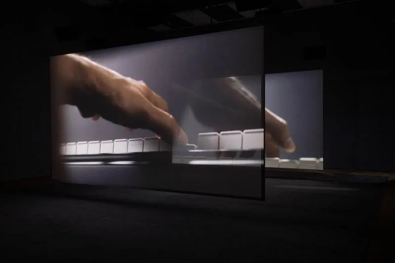
WORK / 2017
作品沿用 Ravel 左手钢琴协奏曲的双重演奏结构，但把两条时间线重新拉入具体展览空间。Marian Goodman 与 MMFA 的资料说明，Louis Lortie 与 Jean-Efflam Bavouzet 的演奏从同步开始，随后分离、重合、漂移，再次恢复同步；“interval”因此既是屏幕之间的距离，也是观众行走和停留所经历的时间。
Ravel Ravel Interval 把原本属于剪辑和演奏的差异扩展成一段空间经验。观众不再只是在两块屏幕之间比较速度，而是在移动时感到自己的停留长度如何改变两条时间线的关系。作品的重要性在于，它把“同一首曲子”的问题推进为“同一件作品能否在迁移中保持同一”的问题：每次重新适配都保留核心结构，却让建筑、演奏者、距离和观众共同写入新的版本。
提取词｜间隔／再适配／钢琴／观看距离
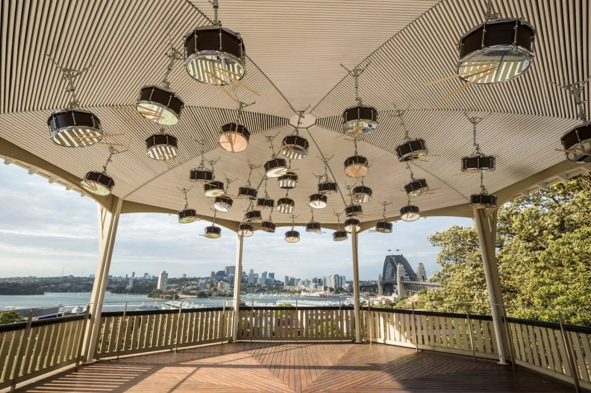
WORK / 2017
作品最初在 Sydney 的 Observatory Hill 呈现。38 个倒置的鼓被悬挂在 Rotunda 中，鼓面成为反射光线和海港景观的圆形碎片；风改变鼓的方向，附着的鼓槌产生各自的节奏，Mozart 协奏曲则成为关于自然、历史、启蒙与殖民视角的声音线索。Kaldor 的资料还说明，作品曾在纽约、莫斯科和卢森堡被重新呈现，地点迁移本身构成作品的一部分。
作品把“风景”变成会发声的装置：自然力量并非被观看的背景，而是主动改变物件的节奏和排列。标题中的 resort 既像避难所，也像一种无法真正抵达的退路；经典音乐在新的地点中被迫承受距离、漂流和历史的重量。作品的重要性在于，它把一件西方启蒙音乐的“杰作”置于澳大利亚殖民史和原住民文化被驱逐的现实中，以风和航海日志改变协奏曲的速度与流向；因此它既是声学雕塑，也是关于地点、文化权力、跨海迁移和公共艺术责任的历史装置。
提取词｜风／鼓／自然／殖民与启蒙的历史视角
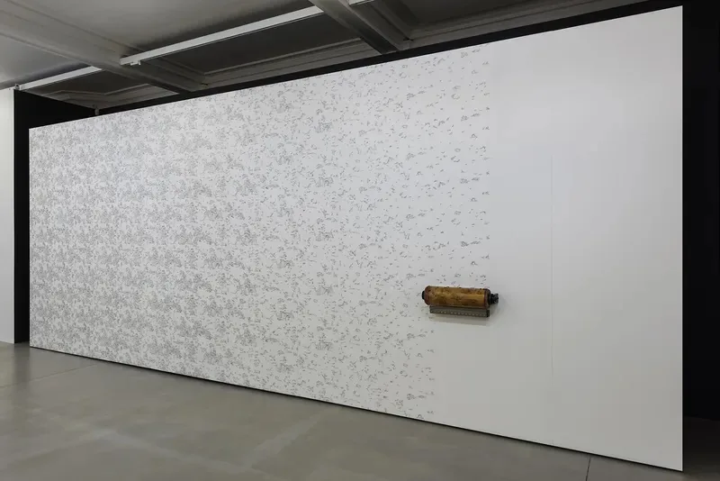
WORK / 2017
作品从旧式墙纸图案出发，把重复的装饰纹样转译成大幅纸面和可发声的滚筒结构。相关展览资料说明，Sala 以铅笔把图案压印到墙纸上，再把图案的两半组合进滚筒，使滚筒在钢齿上运动时成为一种音乐盒。图像、手工压力、历史样式和机械声音因此在同一件作品中相互转换。
作品的核心不是把绘画附加一个声音效果，而是让图案本身变成声音的谱面。墙纸原本承担重复、覆盖和室内装饰的功能；当它被压印、切分并重新组合，重复就显出身体劳动和机械节奏的差异。作品的重要性在于，它把装饰性材料从“背景”提升为一种会组织时间的系统：观众既看到图案的扩散，也听见滚筒把历史样式转成不稳定的旋律。由此，Sala 将视觉秩序、手工动作和机械演奏放到同一条关系链中，继续推进他对“声音如何从物件和空间中生成”的研究。
提取词｜墙纸／图案／滚筒／手工压力
WORK / 2017
作品以两个屏幕呈现钢琴键盘：键面可以被人的手触发，也可以被程序控制。Pinault Collection 的项目资料将其描述为一件双屏视频作品，并把它放入与《时间不再》相连的展览路径中。键盘既是乐器，也是一个可被编程、重复和接管的动作界面。
“接管”首先发生在手势层面：观众看到手指造成声音，却不能确定动作是否仍由人的意图控制。双屏结构把真实演奏与程序化动作放在同一平面，使音乐的作者性变成一种需要持续辨认的关系。作品的重要性在于，它把 Sala 一贯关注的身体、机械和时间差推进到数字控制的层面：手指不再只是表达音乐，而成为可以被复制、预设和替代的接口；当作品进入 Bourse de Commerce 的展览网络时，它又与《时间不再》的旋转唱盘、现场音乐活动形成对照，让“谁在演奏”成为关于技术、身体和机构的共同问题。
提取词｜键盘／程序／手势／作者性
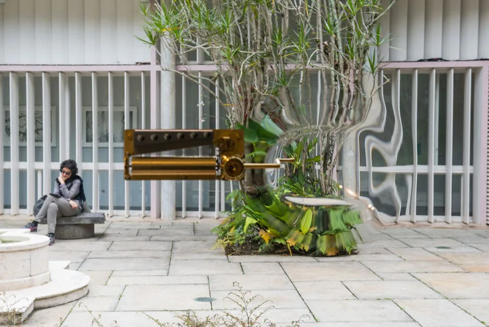
WORK / 2016
Instituto Moreira Salles 2016 年展览的作品清单明确列出这一版本：音乐盒、玻璃与金属窗框，署名为 Olavo Redig de Campos 设计的 IMS 建筑版本。作品把建筑窗景与一段可被启动的旋律结合起来，观众面对的不是被动的窗，而是一件既框取景观、又把声音嵌入建筑界面的装置。
这一版本说明《No Window No Cry》并不是一个固定物件，而是一套会随建筑迁移而改变的关系系统。IMS 的展览文本强调，Sala 让声音与建筑共同组织观众的 circulation，并通过照片、物件和声音影像把观看推进到“当下”的感知经验中；窗框因此同时承担了取景、记忆和发声三个功能。2016 版本的重要性在于，它把现代主义建筑的视觉框架转成可被身体触发的音乐界面，让景观不再只是被观看的对象，而成为会被声音重新书写的现场。
提取词｜窗／景观／音乐盒／建筑界面
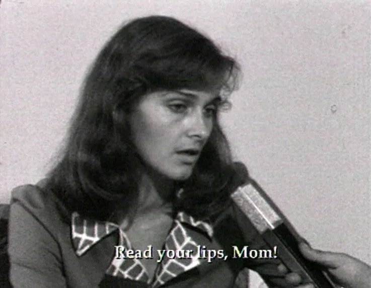
WORK / 2014
作品把音乐、瞬间和空间的关系推向更强的现场性：现在不是一个点，而是由声响、光线和观众位置共同生成的持续区间。标题中的降 B 调既是音乐提示，也是一个无法脱离身体听觉的空间条件；作品让观众在声源、屏幕和停留之间感到“当下”正在被制造。
它延续了 Sala 对“现在”的怀疑：我们听到的当下总被刚刚过去的声音和即将到来的声音包围。作品的现场性不在于制造一个新的事件，而在于让观众意识到自己总是在一个已经开始、也尚未结束的声学过程里。它的重要性在于把时间从影像的叙事顺序中释放出来，使观众不能只靠观看画面理解作品，而必须用身体测量持续、回声和缺席，从而连接 Sala 早期关于记忆的影像与后期关于空间声场的装置。
提取词｜当下／持续／声学空间
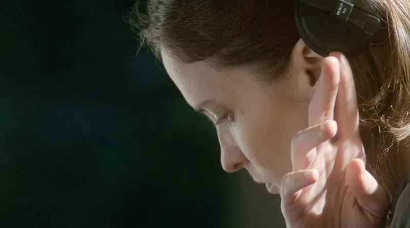
WORK / 2013
两种演奏、两个速度和两条影像时间线相互靠近又彼此错开。作品围绕 Ravel 的左手钢琴协奏曲展开：这首作品为第一次世界大战中失去右臂的钢琴家 Paul Wittgenstein 而作，Sala 将两位演奏者的左手、屏幕和节拍关系拆成可被观看者穿越的空间结构。
“unravel”不是把乐曲拆坏，而是让被认为固定的作品显出内部的弹性。观众在两个屏幕之间移动时，也被迫在两种时间之间作出选择；作品把演奏差异从音乐内部推向观看者的身体。作品的重要性在于，它以一件经典音乐作品为材料，却不把经典当作需要被忠实保存的对象，而是揭示演奏、技术、身体限制和观看位置如何共同决定我们所听见的“同一首曲子”；差异因而成为一种伦理性的观看练习。
提取词｜双重／节奏／差异／选择
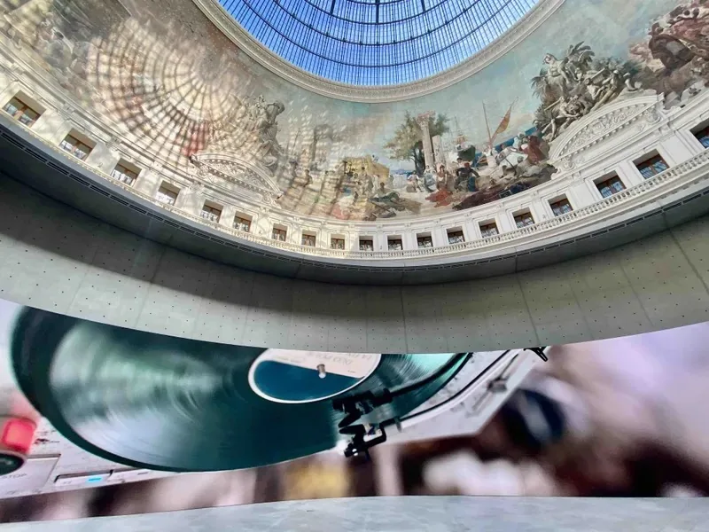
WORK / 2011
作品以 Sarajevo 的城市移动和日常路径为核心，把战争记忆放入城市空间、路线和身体的连续性中。1395 天既是时间计量，也是一个人在城市中反复穿越危险和等待的尺度。作品不依赖历史说明片的旁白，而是让交通、道路、建筑、停顿和颜色限制共同构成一种被战争重新编排的日常感知。
作品不把战争变成远景背景，而让城市的道路、建筑和等待成为记忆的载体。行走本身带有风险感，时间因此拥有政治重量；观众被迫注意那些看似平常、却被历史重新标记的城市转角。它的重要性在于将战争记忆从“过去发生过的事件”转化为持续影响当下行动的空间条件：城市仍在运行，但每一次经过、绕行和等待都携带着无法被完全看见的历史压力。
提取词｜Sarajevo／路径／战争记忆
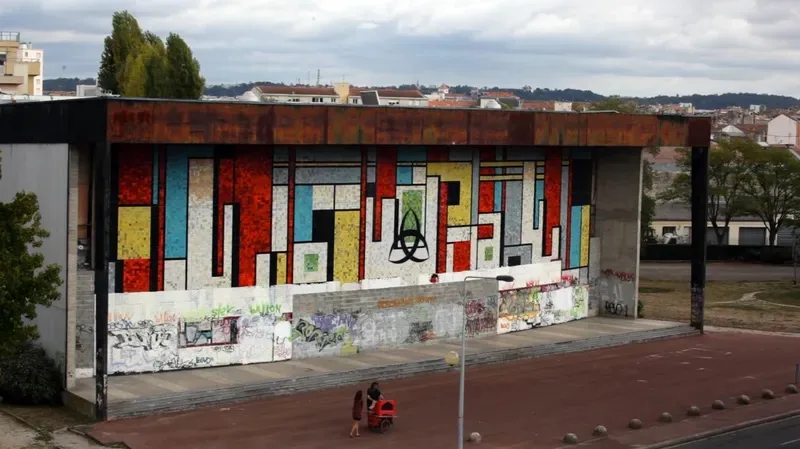
WORK / 2010
作品以 clash 为方法：不同声音、动作或观看角度彼此重叠，却不被整齐地合并。它可与同展览中的 No Window No Cry 对读：电影里的音乐在实体音乐盒中获得另一种生命。作品围绕 The Clash 的歌曲“Should I Stay or Should I Go”展开，在废弃的演出场所、桶式风琴和音乐盒之间，把流行音乐的记忆改写成不稳定、带有摩擦的机械演奏。
冲突在这里不是戏剧性高潮，而是形式结构。观众必须在不同时间层之间寻找可听见的连接，作品因此把“理解”变成主动调频；声音的失败并没有被修复，而是被保留为观看的条件。作品的重要性在于，它把一首广为流传的歌曲从文化记忆中拆出，再通过机械装置、公共空间和现场动作重新分配作者性：熟悉的旋律仍可被辨认，但它已不再属于一个稳定的原唱或单一历史，而成为不同身体和物件共同制造的偏差。
提取词｜冲撞／同步失败／调频

WORK / 2008
作品把一座废弃的 Buckminster Fuller 设计监视站变成声学装置。独特的圆顶建筑不是背景，而是决定声音如何被反射、分隔和定位的结构；人物、鼓、建筑回声与没有被完整听见的对白被置于同一场景中，使“回答”既指向语言，也指向空间是否能够回应人的行动。
观众面对的不是一块“播放影像的屏幕”，而是一个会回声、会分隔、会改变听觉方向的空间。Sala 将图像叙事拆成可被身体重新组合的片段，使建筑成为声音的共同作者。作品的重要性在于，它将建筑从叙事背景提升为主动的表演者：历史的残余、人物的呼喊和鼓声只有在特定空间的反射中才成立，也为 Sala 后来把展厅、圆顶和大型建筑作为声学结构的实践奠定了关键模型。
提取词｜房间／声场／空间对位
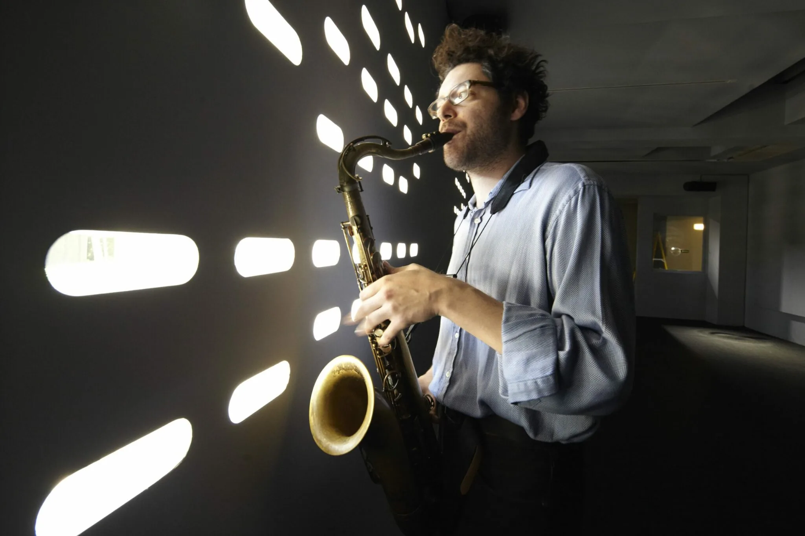
WORK / 2005
作品把身体、城市立面和持续的声音拉到同一尺度上：自由爵士乐手 Jemeel Moondoc 被悬置在 Berlin 一栋公共住宅的高层窗外演奏。表演发生在一个既是住宅、也是城市立面和观看装置的地点，声音从高处向外扩散，影像则把危险、孤独和即兴演奏压缩为一个持续的空间姿势。Serpentine 的展览说明又把它与现场表演 3-2-1 连接起来。
在这里，身体并不只是影像中的主体，也成为建筑的一个可移动测量单位。声音让远处的身体与近处的观众同时存在；当现场萨克斯手回应影像时，固定记录又被重新打开为即兴关系。作品的重要性在于，它把“现场”从一次表演扩展成影像、录音、建筑和观众共同承担的时间结构：即使身体被固定在屏幕中，声音仍能在新的展览现场继续发生、偏移和被重新演奏。
提取词｜悬置／建筑／持续音／身体尺度
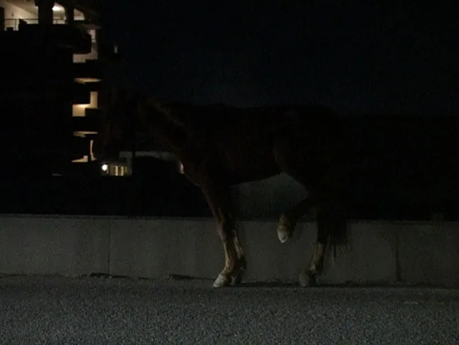
WORK / 2003
作品在 Tirana 的道路上呈现一匹消瘦的马：车辆经过时，它抬起一只蹄子，却始终停留在原地。标题把观看引向循环，也把身体的停滞与城市转型并置。道路、汽车和动物共同组成一种简短却持续回返的城市动作，作品拒绝把停顿解释为单纯的等待或象征，而让观众在每一次重复中重新确认身体与环境的关系。
作品可作为 Sala 后续“时间差”方法的早期入口。这里的时间不是线性叙事的容器，而是让观众察觉到观看本身正在改变；每一次车辆经过都像一次被触发却没有完成的逃离。它的重要性在于将最小的动作发展成一种叙事结构：没有事件被真正推进，但城市的速度、动物的迟缓和观看者的期待不断互相校准，后续作品对延迟、循环和不稳定当下的关注由此获得清晰的早期形式。
提取词｜重复／延迟／记忆的偏移
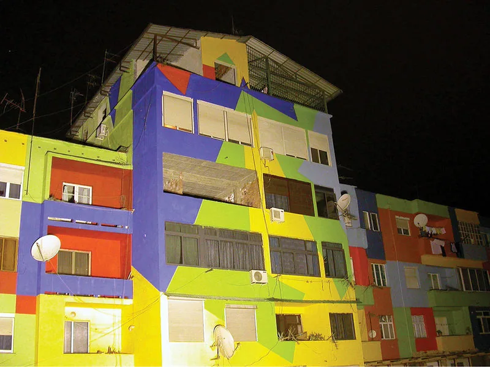
WORK / 2003
作品把 Tirana 的城市颜色、公共空间和政治改革放在同一条视觉—制度链上。颜色不是装饰，而是城市治理和集体记忆的表层；它也把艺术家与 Edi Rama 的合作关系带进城市改造的叙事。镜头在城市景观、谈话和公共建筑之间移动，使颜色计划同时呈现为审美策略、政治沟通和对旧制度痕迹的覆盖。
Sala 不把城市改造拍成单纯的成功故事。颜色在镜头中既明亮又不稳定：它覆盖旧有历史，却也把城市的政治想象暴露出来。画面越鲜艳，旧制度的残留和城市更新的矛盾越难被隐藏。作品的重要性在于，它把“城市美化”转译为关于谁有权改变公共空间、谁能代表城市记忆的视觉政治；艺术家也因此保持了观察者与参与者之间的张力，而不是替城市给出单一答案。
提取词｜城市／颜色／公共治理／记忆
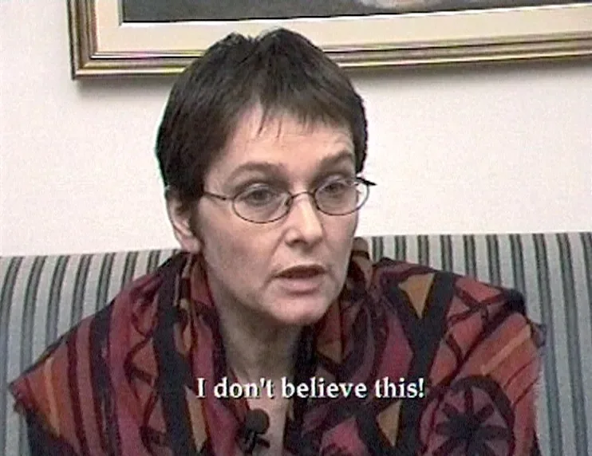
WORK / 1998
早期作品以采访为形式，让语言的断裂成为影像结构：说话者、字幕、记忆和政治历史之间没有完全重合。字幕不是解释，而是把“说过的话”变成会迟到、会缺席的视觉层。作品将私人叙述置于后共产主义 Albania 的社会记忆中，纪录性方法因此不等于客观记录，而是让被访者、翻译和观看者共同面对无法完整复原的过去。
这件作品的关键不是“讲述一个过去”，而是让观众感到词语如何在个人记忆中失去同步。母亲的回忆、被遮蔽的历史和字幕之间始终留有缝隙；后期作品中的延迟、重复和声音错位，可以在此找到语言层面的前史。它的重要性在于把 Sala 的核心方法提前确立：声音不是为图像提供说明，而是揭示历史叙述中始终存在的缺口，让观看转变成对翻译、记忆和证词可靠性的主动判断。
提取词｜语言／字幕／失语／记忆
05 / EXHIBITIONS
展览不再单独列为资料清单，而是与作品的声学、建筑和制度语境一起阅读。
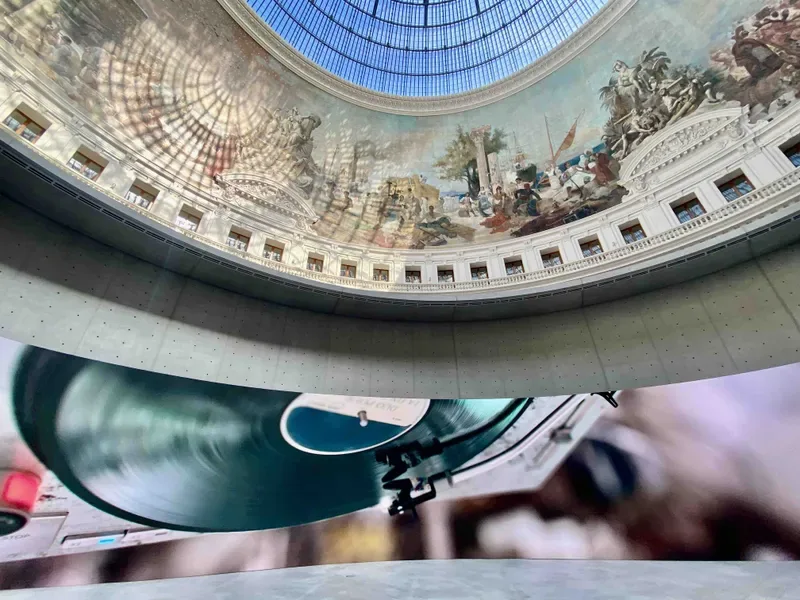
EXHIBITION / 2024—2025
2017 年版本被重新适配为沉浸式展览，观众在两条 Ravel 时间线之间移动；作品的差异由空间距离和节奏差共同制造。Marian Goodman 与 MMFA 的资料指出，这是作品的加拿大首展：两位钢琴家 Louis Lortie 与 Jean-Efflam Bavouzet 演奏同一首左手协奏曲，起初同步，随后分开、重合、再次漂移，最后恢复同步。
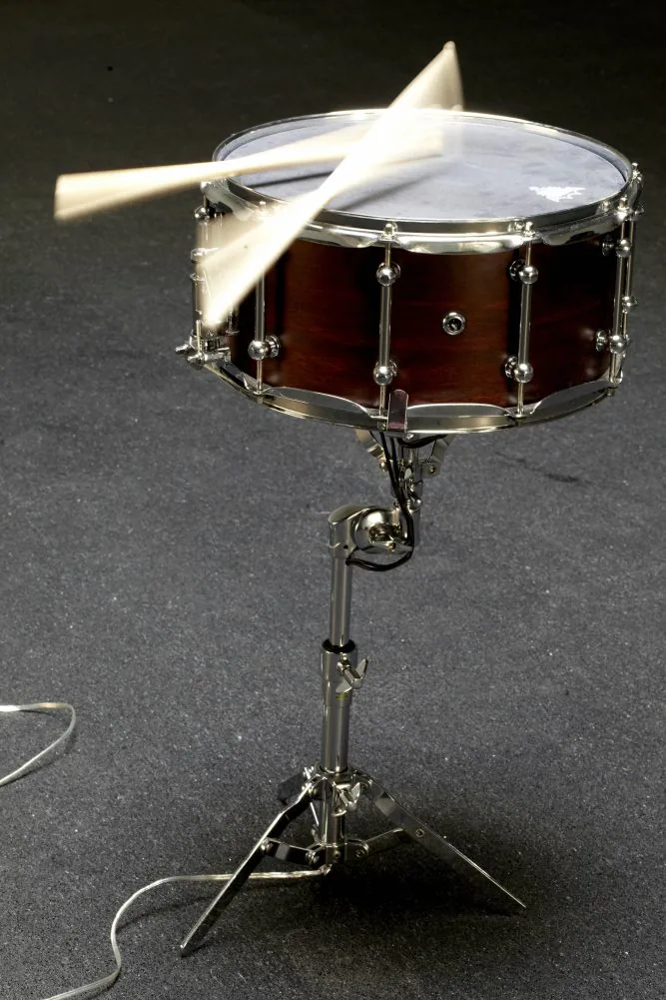
EXHIBITION / 2024
展览把 Time No Longer 与 Surface to Air、Noli Me Tangere Inversa 等作品并置，继续讨论光、表面、时间层与空间感知。画廊资料将其定位为艺术家在洛杉矶的首次展览，也是 Time No Longer 的美国西海岸首展；旋转唱盘与 Messiaen 的《时间终结四重奏》相遇，旁边的壁画系列又把摄影瞬间、云、沉积岩和 fresco 的 giornatas 组织成不同尺度的时间胶囊。

EXHIBITION / 2022—2023
作品与 1395 Days Without Red、Take Over、Another Solo in the Doldrums、Nocturnes 等共同构成一条关于声音、旋转、空间和终时刻的展览路径。Time No Longer 以一块贴合圆形 Rotunda 的巨大弧形屏幕作为法国首展的核心，通道橱窗、Gallery 2、Studio、Auditorium 和地下空间又分别承载 Untitled Maps／Species、Another Solo in the Doldrums、Nocturnes、1395 Days Without Red 和 Take Over，使单件作品成为一张跨楼层的展览地图。
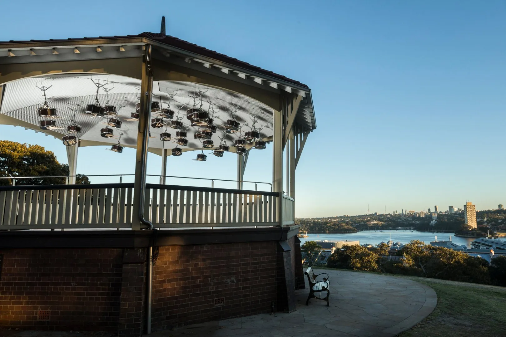
EXHIBITION / 2022
Transfigured 将 Time No Longer 带入 Bergamo 的历史建筑与壁画环境中，使计算机生成的旋转影像面对已有的宗教图像、建筑残片与观众路径。展览的重要性在于，它把作品的失重、旋转和时间幽灵放进一个具有厚重历史层的场所，令新媒体影像不再只是黑箱中的沉浸式效果，而成为与旧建筑共同生产时间感的装置。
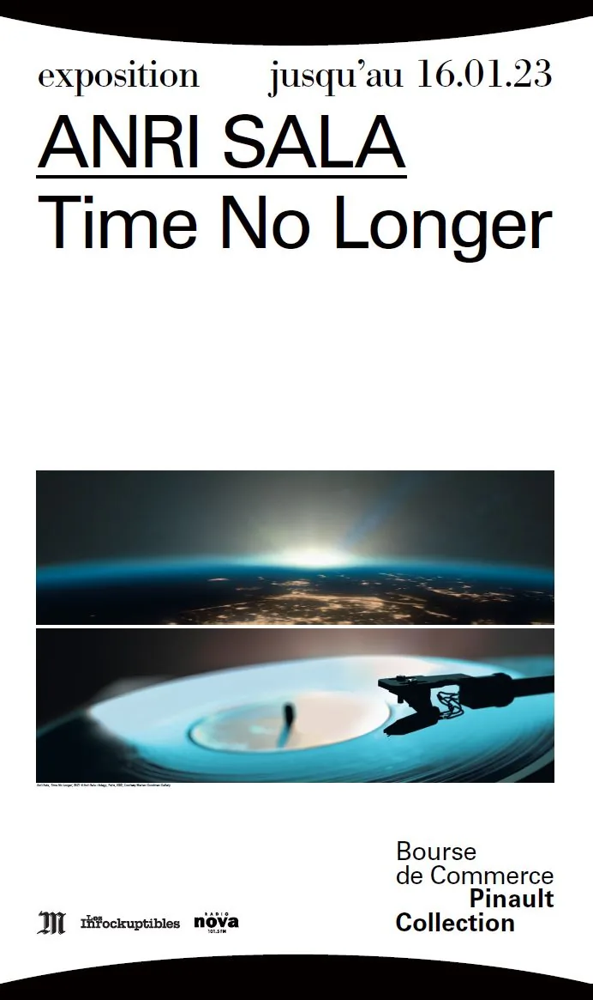
EXHIBITION / 2021
Kunsthaus Bregenz 的个展把 Time No Longer 放进一座以混凝土、垂直层高和自然光著称的建筑中。展览资料将作品描述为一套关于时间、声音、光线和失重感的空间实验：弧形屏幕、旋转唱盘和 Messiaen 的音乐不只是被陈列，而是与建筑的尺度共同构成观看条件。
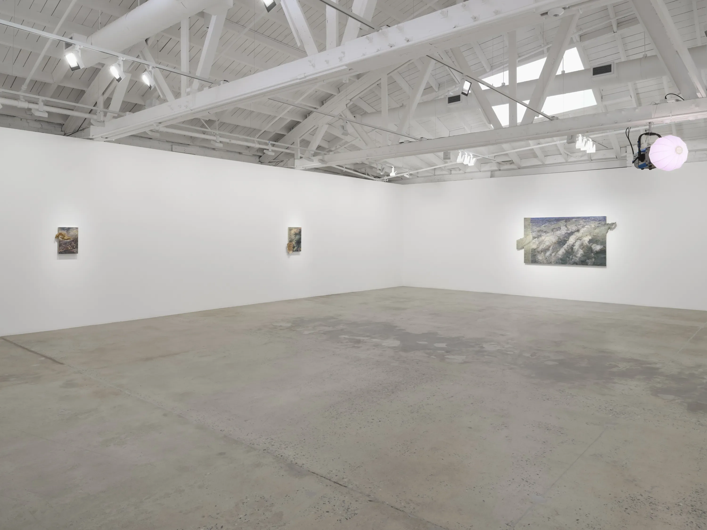
EXHIBITION / 2017
38 个倒置小军鼓、风、光影与 Mozart 单簧管协奏曲在 Observatory Hill 形成临时声学地景。作品的空间和风向构成展览本身；Kaldor 的项目资料进一步说明，Sala 依据水手 James Bell 的航海日志改变 Adagio 的速度，使 Mozart 的协奏曲仿佛作为漂流的讯息抵达澳大利亚，并在 Sydney 的地点史、殖民历史和公共音乐传统中重新发声。作品后来在纽约、莫斯科和卢森堡被重新呈现，地点迁移也是它的构成条件。
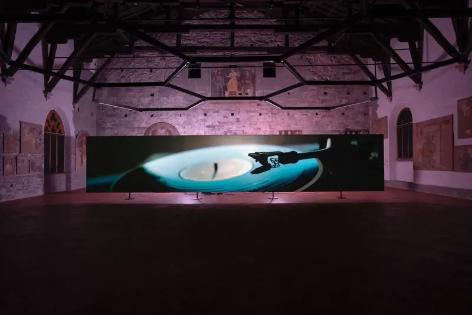
EXHIBITION / 2016
展览将早期纪录性影像、声音／音乐和建筑性装置放在同一条脉络中。Long Sorrow、Answer Me、Le Clash、Tlatelolco Clash、3-2-1、The Present Moment 和 Ravel Ravel Unravel 共同构成一个跨媒介回顾。New Museum 的档案特别强调，作品分布在第二、三、四层展厅，并以多声道装置、现场演出和定期放映组成一段“针对建筑而作”的交响式经验；每周的 Intervista 与 Nocturnes 放映又把早期语言与记忆问题带回现场。

EXHIBITION / 2013—2015
Ravel 的两种演奏被拆成两条并置的时间线；随后在 Tel Aviv Museum 的个展中与 Tlatelolco Clash 并置，声音的差异成为观看结构。Ravel Ravel Unravel 源自 2013 年威尼斯双年展法国馆的作品语境，把两位钢琴家的左手演奏从同步推向分离、重合和再次错开；No Names, No Title 则把这种对位方法扩展到新的机构、标题和历史空间。
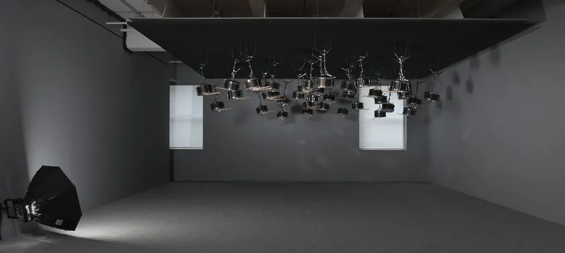
EXHIBITION / 2011
展览以连续循环的方式组织 Answer Me、No Window No Cry、Tlatelolco Clash、Title Suspended、Score、Long Sorrow、3-2-1 等作品，观众进入的是一个由声音、影像和悬置身体构成的时间系统。机构原文将它定义为 cycle／loop：作品两两回响，固定影像与现场演出彼此改写；3-2-1 在展期内进行了四百多次回应 Long Sorrow 的即兴表演，使展览始终处于重复与偏差之间。
06 / ASIA
把亚洲语境中的展览和作品迁移放回相应的作品逻辑中，优先保留可追溯的机构原文。
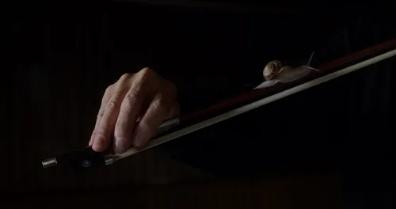
上海展览语境
Kurimanzutto 的展览资料把作品描述为一场 voyage and performance：蜗牛与中提琴共同改变乐句的速度与持续时间。这里的重点不是把蜗牛当作符号，而是让非人身体成为真正的演奏条件。
打开对应原文 ↗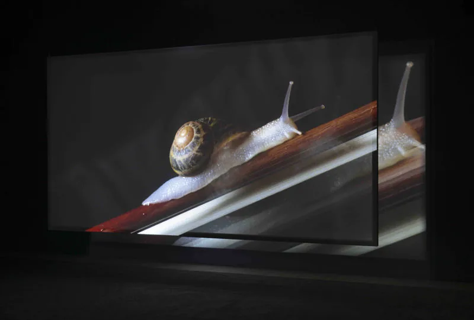
Winsing Art Place／艺术家档案中的亚洲节点
艺术家档案将 As You Go 列入台北的展览延展。作品在不同建筑中继续以屏幕错位、键盘手势和观众行走组织观看，地点变化成为作品方法的一部分。
打开对应原文 ↗当作品从欧洲或美洲进入亚洲城市，变化不只是地点标签。观众的移动方式、展厅的声学、建筑历史与机构语境都会重新塑造作品。对 Sala 而言，迁移不是作品的附加履历，而是作品如何保持结构、同时产生新版本的关键机制。
07 / VOICES
访谈、视频、播客与机构评论分开呈现；每条内容都保留对应的原始入口。
07A / INTERVIEWS
这里优先放对谈、视频和播客；能直接播放的视频会在本站弹窗内打开。
07B / REVIEWS
这里集中放展览评论、机构文本与作品解读，和访谈入口分开，避免把不同类型的来源混在一起。
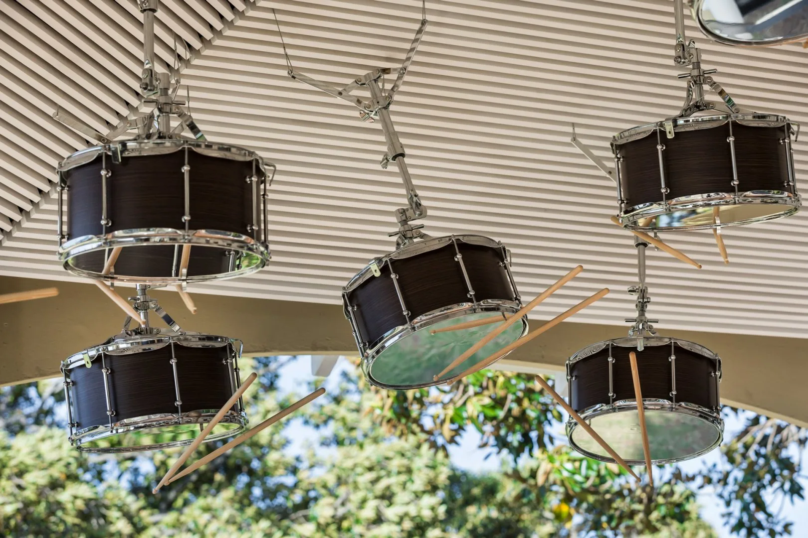
08 / SOURCES
机构、画廊、展览文本与书目被整合在同一来源系统中；每条入口都指向原始页面或对应机构档案。
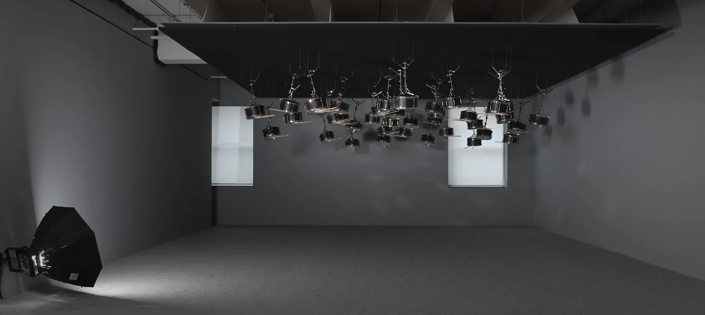
Marian Goodman艺术家档案、作品页与展览资料打开机构原文 ↗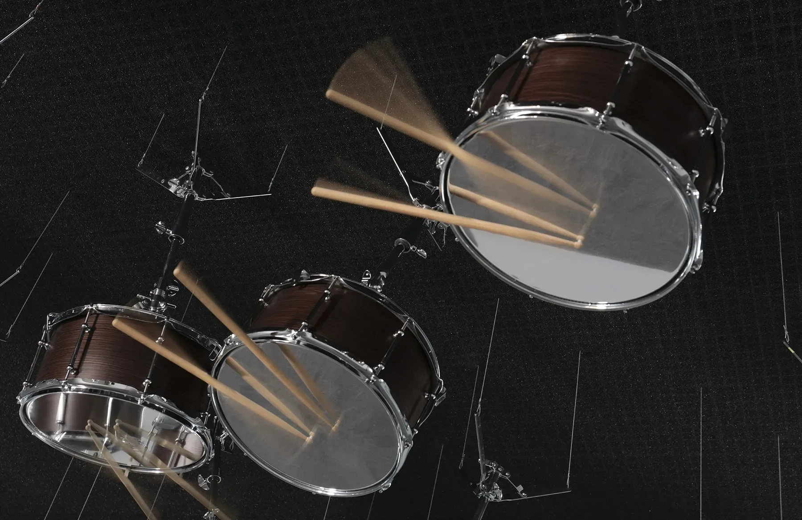
Hauser & Wirth艺术家资料与展览延展打开机构原文 ↗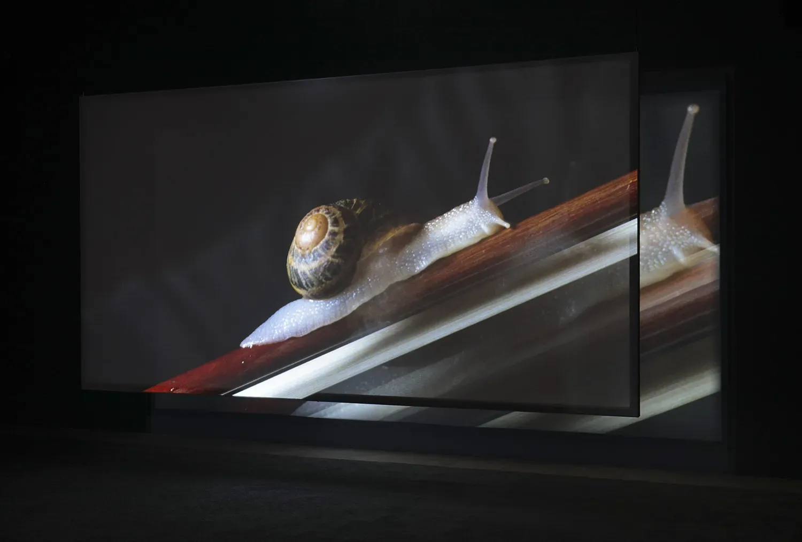
New MuseumAnswer Me 数字展览档案与视频打开机构原文 ↗Serpentine2011 年展览档案打开机构原文 ↗Kaldor Art ProjectsThe Last Resort 项目与教育资料打开机构原文 ↗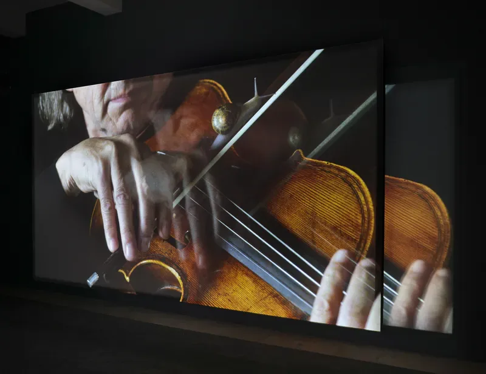
Pinault CollectionTime No Longer 与 Bourse de Commerce 项目打开机构原文 ↗Esther SchipperIf and Only If 与 No Window No Cry 作品页打开机构原文 ↗KurimanzuttoIf and Only If 展览与艺术家页面打开机构原文 ↗Musée des Beaux-Arts de MontréalRavel Ravel Interval 展览资料打开机构原文 ↗Fundação de Serralves2026 预告与机构入口打开机构原文 ↗Instituto Moreira SallesNo Window No Cry（2016）展览资料打开机构原文 ↗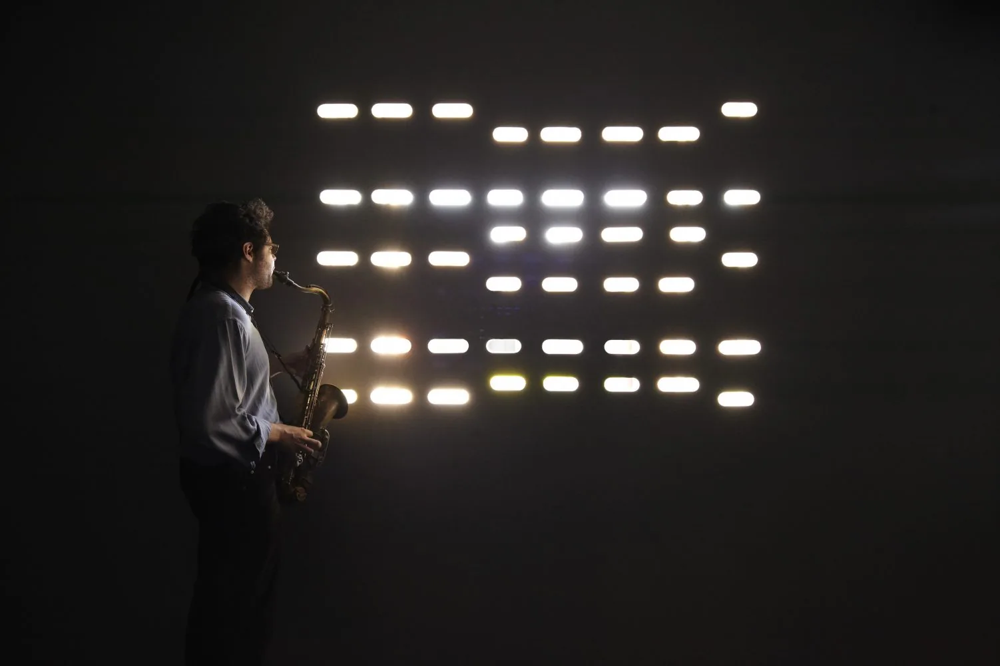
Kunsthaus BregenzAnri Sala press kit打开机构原文 ↗09 / APPENDIX
把作品、年份、媒介与原文入口集中在一张表里，方便快速比对与继续研究。
| 缩略图 | 年份 | 中文题名 | 原文题名 | 媒介／材料 | 来源 |
|---|---|---|---|---|---|
| 2026 | 没有窗户，不要哭（莉娜·博·巴尔迪：玻璃屋） | No Window No Cry (Lina Bo Bardi, Casa de Vidro) | 玻璃、金属窗框、音乐盒；2026；尺寸依建筑版本而变 | 原文 ↗ | |
| 2021 | 时间不再 | Time No Longer | 沉浸式声音、光线与旋转空间；Messiaen《时间终结四重奏》 | 原文 ↗ | |
| 2019 | 随着你前行 | As You Go | 多屏影像／声音装置；钢琴键盘、手指和空间错位 | 原文 ↗ | |
| 2018 | 仅当且仅当 | If and Only If | 视频；蜗牛、弓与中提琴；Stravinsky《Elegy for Solo Viola》 | 原文 ↗ | |
| 2017 | 拉威尔·拉威尔：间隔 | Ravel Ravel Interval | 双通道影像／声音装置的重新适配；两位钢琴家的左手协奏曲演奏 | 原文 ↗ | |
| 2017 | 最后的避难所 | The Last Resort | 38 个倒置小军鼓、风、光影与 Mozart 单簧管协奏曲 | 原文 ↗ | |
| 2017 | 一切颤动（幻觉／退化） | All of a Tremble (Delusion/Devolution) | 墙纸图案绘画、手工压印与由滚筒／钢齿构成的声音装置；尺寸依展览而变 | 原文 ↗ | |
| 2017 | 接管 | Take Over | 双屏视频；钢琴键盘、人工手势与程序化动作 | 原文 ↗ | |
| 2016 | 没有窗户，不要哭（奥拉沃·雷迪格·德·坎波斯：IMS） | No Window No Cry (Olavo Redig de Campos, Instituto Moreira Salles) | 音乐盒、玻璃、金属窗框；2016；具体尺寸依展览版本而变 | 原文 ↗ | |
| 2014 | 当下时刻（降B调） | The Present Moment (in B-flat) | 影像、声音与空间性装置 | 原文 ↗ | |
| 2013 | 拉威尔·拉威尔·拆解 | Ravel Ravel Unravel | 双通道影像装置；Ravel 左手钢琴协奏曲的两种解释 | 原文 ↗ | |
| 2011 | 没有红色的1395天 | 1395 Days Without Red | 电影／影像；Sarajevo 的城市路径与战争记忆 | 原文 ↗ | |
| 2010 | 冲撞 | Le Clash | 影像／声音；现场冲突与节奏结构 | 原文 ↗ | |
| 2008 | 回答我 | Answer Me | 影像装置；建筑内部的声音与视觉对位 | 原文 ↗ |
| 2005 | 漫长的悲伤 | Long Sorrow | 影像、表演性声音与建筑尺度 | 原文 ↗ | |
| 2003 | 一遍又一遍 | time after time | 影像作品；时间、重复与观看节奏 | 原文 ↗ | |
| 2003 | 给我色彩 | Dammi i colori | 视频作品；城市景观、颜色计划与政治语境 | 原文 ↗ | |
| 1998 | 访谈（寻找词语） | Intervista (Finding the Words) | 彩色视频投影、立体声；26 分钟；尺寸可变 | 原文 ↗ |
CLOSING NOTE
这份网站不是把资料压缩成简历，而是把作品、展览、机构与文本重新连成一张可点击的阅读地图。最重要的阅读动作仍然发生在作品面前：听见声音如何改变空间，观察观众如何被重新定位，也留意每个版本中不可重复的地点条件。